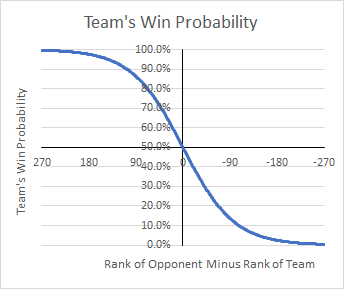
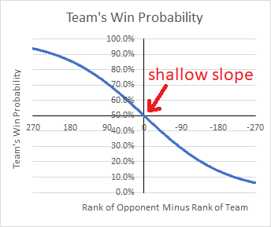
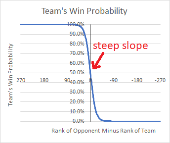
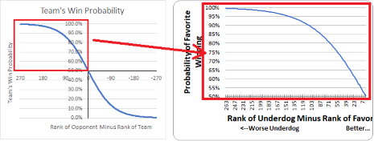
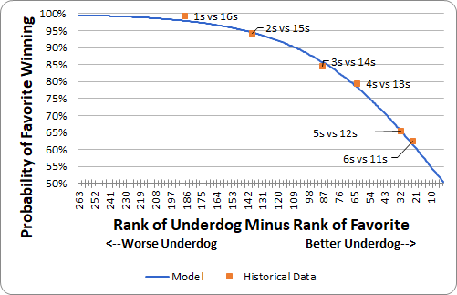
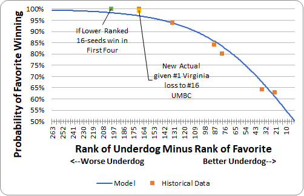
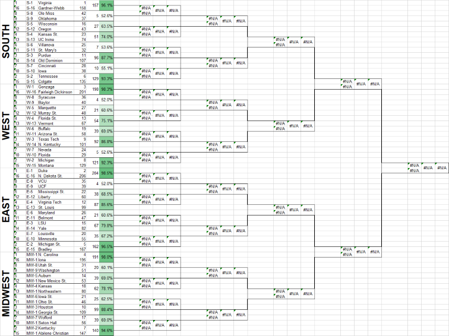

Back to March Madness Simulation Results
Methodology
Determining win probabilities
The first and arguably most important step in creating a meaningful simulation is to develop a reasonable method for calculating win probabilities. While there are many ways one may set about doing this, I decided on a fairly simple approach: the difference in the ranks of any two teams is likely to relate to the probability of each team winning.
While this at first seems overly simplistic, I believe that by the time of the post-season ranking systems incorporated a considerable amount of information learned from the large number of games each team plays in the regular season (including a large number of non-conference games). Thus, I believe most ranking systems actually incorporate much of the more obscure, granular information that other systems might use as variables in determining win probabilities.
What ranking systems should I incorporate into my own rankings?
The next step was determining exactly what rankings to use. I decided that the best method was creating a weighted average of several ranking systems. This will almost certainly be controversial, but it's just my subjective belief of which systems deserve more merit:
| Source | Weight |
| AP Poll | 10% |
| Coaches' Poll | 20% |
| RPI | 5% |
| ESPN BPI | 20% |
| KenPom | 25% |
| ASM (Adjusted Scoring Margin) Rank* | 20% |
| *actually just a statistic, but I think it is quite powerful |
I assembled and ranked a list of 329 teams. Some of these ranking systems did not include each of those 329 teams. In those cases where a particular team was not ranked by every ranking system, I re-weighted it so that the existing rankings for that team displaced the weight of the missing rankings. This means a team that was ranked by only one source as #250 still ranked one better than another team ranked by all sources with a weighted average of #251. Almost every team was ranked by more than one source, and the highest-ranked (best) team ranked by only one source was #179. All tournament teams (including First Four) were ranked by at least 4 sources.
What function best defines the relationship of ranking differential to win probability?
Once I assembled my list of rankings, I had to determine a function that would best relate the difference in two teams' ranks with the probability of either team winning. After some thought it became very clear that the most logical function to represent this relationship would be the logistic curve (or S-curve):

Sorry for the strange reverse order of the x-axis, but I wanted the higher ranked teams to appear on the left and the worst teams on the right. It just made more sense in my mind that way.
There are 4 reasons why this function makes sense. First, there is never a 100% probability that any team will win a given game no matter how unevenly matched it is. There is always something that might happen that allows the underdog to win. Thus, it makes sense for the probability to approach, but never reach, 100%.
Second, it makes sense that a #300 team playing #1 has roughly the same probability as #250 playing #1, but there is a big difference in the probability of #52 vs. #1 and #2 vs. #1. This is despite the difference in the opponents' ranks in both situations being 50. Thus, we know the graph's slope should steepen as it approaches 0. We also know that the probability for a perfectly evenly-matched game (difference in ranks = 0) would obviously be 50% for both teams.
All of the above describes the upper-left quadrant of the logistic curve shown above. If you think about a team that is worse than its opponent (its opponents rank minus its own rank is negative) everything would be exactly the opposite. Thus, it would form a reverse-mirror image on the right side of the chart.
How steep should the logistic curve be?
Now that we know which type of function should, in theory, most closely define the relationship between rank differential and win probability, we must now consider how steep the curve is. Below are two examples, one very shallow and one very steep:
If I did not find some method to determine the steepness of this graph, then these win probabilities would be completely arbitrary! So how did I determine this?
First, some housekeeping: please know that from now on, I will only be showing the upper-left-hand quadrant of the logistic curve as, for the sake of simplifying things, we will only be interested in the win probability of the higher-ranked (better) team:
In order to determine the steepness of the curve, I knew that I would need to find some historical data. I wound up finding some data on Wikipedia regarding the number of upsets in the first round from the NCAA tournament since it expanded to 65 teams in 1985 through 2017:
| Type of Upset | Actual % of Times This Has Occurred |
| 16 seed over 1 seed | 0.0% |
| 15 seed over 2 seed | 6.1% |
| 14 seed over 3 seed | 15.9% |
| 13 seed over 4 seed | 19.7% |
| 12 seed over 5 seed | 35.6% |
| 11 seed over 6 seed | 37.1% |
Then, since I did not have access to the starting ranks of each of these upsets from the years in which they occurred, I just looked at the average rank differential of these six "upset classes" from this year. For example, the average 16 seed in this year's tourney is ranked #170 (minus #1 gets to 169):
| Type of Upset | Actual % of Times This Has Occurred | Avg Rank Diff This Year |
| 16 seed over 1 seed | 0.0% | 169 |
| 15 seed over 2 seed | 6.1% | 133 |
| 14 seed over 3 seed | 15.9% | 88 |
| 13 seed over 4 seed | 19.7% | 79 |
| 12 seed over 5 seed | 35.6% | 36 |
| 11 seed over 6 seed | 37.1% | 22 |
I realize that this shortcut may not be the truest way to measure the data, and it is a small-ish sample size. (There have been only 132 opportunities for each of these classes to pull an upset since 1985.) That said, I feel it provides a reliable enough set of data for which to determine the steepness of the logistic curve, and when graphed, I'm very happy with the fit (Note that the points charted below are actually 1-upset rate):
Looking at the chart, you may see one glaring data point that appears to be an outlier. That would be the fact that a 1-seed has never lost a first round game. My model says that it would be expected for a 1-seed to lose around 3.1% of the time or about once every 32 games. Yet a 1-seed has never lost in 132 games. It's hard to explain this. However, the most likely explanation is this year's average rank differential between 1 and 16 seeds is smaller than it has been, on average, in years past. In fact, even this year if both of the lower-ranked 16 seeds had won their First Four play-in game, it would have resulted in a data point much closer to my probability curve.
UPDATE: A 1 seed has now lost a first round game!!! Down goes Virginia! Down goes Virginia! Down goes Virginia! With this loss, it does slightly improve the fit of my model to the historical data:
From Probabilities to Simulations
Now that we have a methodology for somewhat reliably determining probabilities, we now have to find a way to use that information to create a simulation. I started, like many others, with an empty bracket and 64 starting teams:
For each matchup, the program compares the favorite's win probability to a random number generated between 0 and 1. If the random number is less than the favorite's win probability, then the program assigns the favorite as the winner who will play in the Round of 32. If not, it assigns the underdog as the winner. It does this for every game in the First Round. Then, new probabilities are determined for all of the matchups in the Round of 32. The program then determines from those probabilities those teams who will play in the Sweet 16. It follows this same pattern for every game, every round, and every bracket until it has completed 100,000 full brackets and 100,000 National Champions have been crowned.
Finally, each time a team makes it to the next round, the program adds 1 to that round in that team's array representing the number of times it has made it to each round. Once the program completes, it transcribes all of the arrays into my spreadsheet so that I may analyze the numbers.
All told it takes about 2 hours for the program to complete!
Back to March Madness Simulation Results